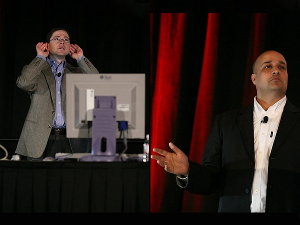
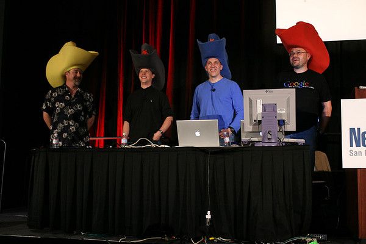
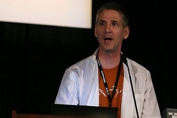
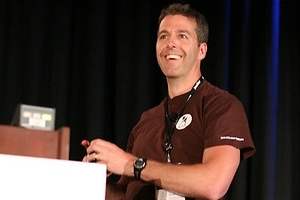
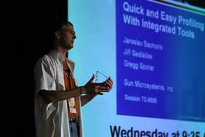
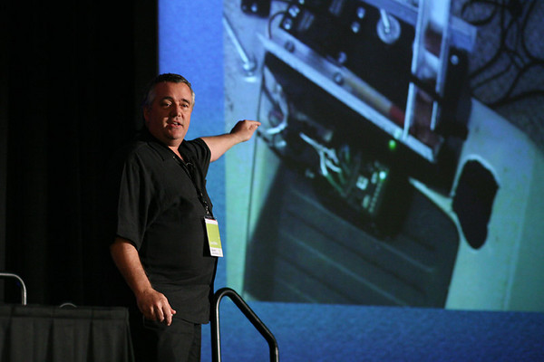
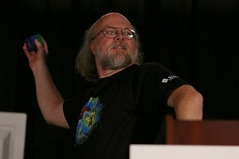

By Ruth Kusterer, photographs by Jan Chalupa
Several of the most popular Open-Source communities, including the NetBeans(TM) and OpenSolaris communities, Web 2.0 and OpenJDK developers, and members of the GlassFish project, met on Monday, May 7 for CommunityOne, a new one-day conference associated with the annual JavaOne(SM) conference. In the opening session, Sun Microsystems's vice president Jeet Kaul welcomed about 1000 NetBeans enthusiasts to the NetBeans track, and announced the availability of the first NetBeans 6.0 preview release. He also pointed out that several new NetBeans related books were released this year, including Adam Myatt's "Pro NetBeans IDE 5.5" and the brand-new "Rich Client Programming: Plugging into the NetBeans Platform" book.

The opening session continued with the keynote by Johnathan Schwartz, President and CEO of Sun Microsystems, and Rich Green, Executive Vice President for Software. Like last year, they continued their routine of responding to tough questions that arose during the year: Green said that while Java was successfully open-sourced, he was still working on making outside contributions easier. An open-source project does not just mean waiting for free contributions; you have to provide people with a platform to communicate. Another of Green's goals for this year was to improve the desktop Java experience not only for developers, but also for users. Kaul then concluded the session by introducing two NetBeans partners, Sprint and Infosys.
During the lunch break, everybody returned to the hall to be part of a live recording of the latest Java Posse podcast: Tor Norbye (Sun Microsystems), Carl Quinn (Google), Dick Wall (Google), and Joe Nuxoll (Apple) are famous in the Java developer community for their technical blog. As usual, they started off with Java technology news, and added in their technology predictions for this year. The attendees enjoyed their attempt at introducing controversy by discussing their top ten lists with topics such as "Top 10 Missing Java Features" or "Top 10 APIs to Nuke from Java". If you are interested in listening to the whole podcast including the Q&A session, check the Java Posse blog.

After lunch, attendees could choose between six sessions in two tracks: Track A gave an overview of NetBeans Innovations and new features targeted for NetBeans IDE 6.0, while track B gave examples of NetBeans Everywhere by showcasing the latest third-party plugins and Mobile Java applications.
The first session of track A introduced the vast improvements added to the latest NetBeans IDE 6.0 milestone: The new NetBeans Installer will let you install and uninstall related sets of features easily by merely checking a box. Jan Lahoda gave a first look at the long-awaited new editing features: The NetBeans Editor was completely rewritten for release 6.0, and is now capable of fast error marking, semantic coloring, fast and smart code completion, instant rename, live marking of occurrences, and it supports task lists, live templates and easy code generation.

Arseniy Kuznetsov directed the attendees' attention to other small but noteworthy improvements in NetBeans IDE 6.0: For instance, editable file version comparison (Diff) and local file history were added, and there were a few updates to the debugger. A larger chunk of time was dedicated to Gregg Sporar's demonstration of the NetBeans Profiler, which will be directly included in the standard IDE from version 6.0 on.
In the next session of track A, Hans Muller, Tomas Pavek, Joshua Marinacci, and others revealed the next chapter in the story of Swing GUI Building. Last year, the NetBeans 5.0 GUI builder (also known as Matisse) revolutionized the development of graphical user interfaces. This year with NetBeans IDE 6.0, the NetBeans developer team added full support for the very latest desktop technologies, such as Beans Binding (JSR 295), the Swing Application Framework (JSR 296), a visual menu designer, quick internationalization, and many more. The session included an impressive demonstration of how to build an entire database-aware desktop application in five minutes -- with only a single line of new code.

The third session focused on Ruby, a scripting language that has been gaining a lot of traction in the western world in the last 5 years. NetBeans IDE 6.0 will integrate support for Ruby projects, including the web framework Ruby on Rails, as well as the Java implementation of Ruby, JRuby. In case you have not had a chance to lay hands on Ruby yourself yet, the co-leaders of the JRuby project, Charles Nutter and Tomas Enebo gave an overview of these three closely related technologies. The overview was followed by a practical demo by the actual developers of the Ruby tooling in NetBeans, Tor Norbye and Martin Krauskopf, who showed how surprisingly intuitive working with Ruby is -- and even moreso now with IDE support.
At the same time, track B picked out four of the most popular third-party plugins to showcase. CollabNet demonstrated the Subversion module that matches the usability and ease of use that you are used to from the IDE's built-in version control system, CVS. YASU Technologies presented their NetBeans-enabled business rule development and testing environment, QuickRules BRMS. Intland's CodeBeamer plugin allows NetBeans developers to collaborate, share knowledge, and develop software projects effectively from diverse locations and geographies. Xoetrope provides the Kaleidoscope and Carousel plugins for NetBeans, which are used for developing Java applications with the XUI framework.

Track B also featured a noteworthy session about Mobile application development with the NetBeans IDE. Most advanced mobile phones, PDAs, or other embedded devices are able to run Java ME applications. With NetBeans IDE, you can create your own such applications. The Mobility expert Martin Ryzl showed how powerful a seemingly 'small' Mobile Application can be. He also explained how to deal with typical difficulties caused by the sheer variety of devices, and how an IDE greatly simplifies not only the creation, but also the distribution, of your Mobile Applications. NetBeans assists you with branding, uploading executables to servers, or transferring directly to actual devices, such as mobile phones, set-top boxes, or PDAs.
NetBeans IDE supports both the CLDC and CDC mobile device configurations, and comes with a special visual designer for mobile applications, much like the GUI Builder Matisse for desktop applications. Thanks to the NetBeans platform's modularity, new database providers, deployment types and even your own custom visual designer components can be easily distributed through a NetBeans update center.

The Mobility session ended with a Mobile development tip that fits this year's robot-themed JavaOne well: Eric Arseneau got hold of a couple of the first Sun SPOTs, small wireless sensors that fit into the palm of your hand. You can be one step ahead and use the NetBeans Mobility pack to program Sun SPOT applications. Each device is equipped with light, temperature and 3D-motion sensors, LCDs, radio, and other connectors -- and of course it runs a Java Virtual Machine. This makes these sensors the ideal choice for all kinds of advanced robots and probes, not to mention the vast opportunities for the rise of a new generation of highly amusing geek toys.
After the end of the two tracks, the attendees rejoined in the big hall for James Gosling's closing session. James, who is known as the father of Java, hosted a presentation of this year's coolest applications of Java technology technology, with the funniest one probably being a web application for remote dog training."

For NetBeans enthusiasts who were not among the ones who received a copy of the freshly released book, "Rich Client Programming: Plugging into the NetBeans Platform", a USB-Stick, or a t-shirt, there was a last chance for a cool prize at the end of NetBeans Software Day 2007 when James Gosling gave away highly coveted prizes including a Nintendo Wii, an iPod nano, and a pair of noise-canceling headphones.

Another audience favorite was the WorldTour video: It told the true story of two brave adventurers whose travels brought them from Prague over Turkey and Cyprus to Israel. Their mission? To hand-deliver NetBeans installation CDs to community members who could not even be reached by normal mail! Do you want to meet Micah and Martin on your doorstep, too? Check their video blog and competition details at http://netbeans.tv/!